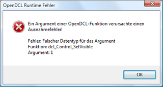

Bei der Arbeit mit OpenDCL können verschiedene Arten der Fehlerbehandlung zum Einsatz kommen: Standard AutoLISP Error Handling, die Behandlung fehlerhafter Nutzereingaben sowie die Fehlerbehandlung der OpenDCL Laufzeitumgebung. Das Standard AutoLISP Error Handling wird an dieser Stelle nicht näher erläutert.
Fehlerbehandlung von Nutzereingaben
Ein optimal designtes und gut durchdachtes Benutzerinterface sollte den Endanwender weitestgehend von fehlerhaften Eingaben abhalten. Mit OpenDCL können Sie zur Laufzeit Steuerelemente dynamisch deaktivieren (oder sogar verstecken). Auf diesem Wege ist es möglich, Abhängigkeiten der Steuerelemente untereinander zu visualisieren und so zu verdeutlichen, dass nur gültige Nutzereingaben zulässig sind.
Die Behandlung von Nutzereingaben wird in OpenDCL über Ereignisse (Events) der jeweiligen Steuerelemente oder der Dialogbox selbst realisiert. Einige Steuerelemente, wie das Textfeld, unterstützen Eingabefilter, um fehlerhafte Eingaben von vornherein zu umgehen. Steuerelemente wie die Auswahlliste schränken die Nutzereingabe auf wenige, gültige Werte ein. Bei einigen Dialogen steht das Ereignis CancelClose zur Verfügung, mit dem es möglich ist, zunächst die Nutzereingaben zu validieren und gegebenenfalls das Schließen des Dialogs zu verhindern.
Das nachfolgende Beispiel zeigt ein typisches Szenario für das Ereignis CancelClose:
(defun HighlightFormErrors () ; T zurückgeben, wenn ein Fehler auftrat, ansonsten NIL (if (CheckForFormInputErrors) ; Funktion aufrufen, die die Werteprüfung übernimmt (progn ;; Hier kann der Fehler angezeigt werden, z.B. durch einen Hinweistext, wie der Fehler behoben werden kann, ;; (anschließend NIL zurückgeben, wenn der Fehler beseitigt wurde!) (dcl-MessageBox "Dialog enthält ungültige Eingaben!" "Fehler" 2 4) T ; Mit T wird angezeigt, dass ein Fehler gefunden und nicht behoben wurde ) ) ; Diese Funktion gibt NIL zurück, wenn keine Fehler gefunden wurden ) (defun c:Project1/Form1#OnCancelClose( intESCWasPressed /) ;; T zurückgeben, um zu vermeiden, dass der Dialog geschlossen wird, ;; sofern nicht Abbrechen gedrückt wurde und noch immer ungelöste Fehler im Dialog zu finden sind. (and (/= intESCWasPressed 1) (HighlightFormErrors)) ; Das Schließen des Dialogs durch Abbruch sollte immmer möglich sein )
Fehler der OpenDCL Laufzeitumgebung
Der Aufruf von Funktionen der OpenDCL Laufzeitumgebung kann in zwei Arten von Fehlern münden: Ausnahmefehler und Funktionsabbrüche.
Ausnahmefehler deuten auf einen Fehler im Quellcode hin. Typische Beispiele sind die Übergabe falscher Argumenttypen (z.B. Zeichenkette statt Ganzzahl) oder falscher Argumentwerte, z.B. wenn ein Argument obligatorisch, der übergebene Wert jedoch NIL ist. Selbst wenn die OpenDCL Fehlermeldungen ausgeschalten sind (siehe SuppressMessages), werden Ausnahmefehler immer in einer Dialogbox angezeigt. Dabei werden die Stelle und Art des Ausnahemfehlers angezeigt und anschließend ein AutoLISP-Fehler ausgelöst, der das Programm zum Anhalten zwingt. Die Fehlermeldung zeigt den Namen der fehlerproduzierenden Funktion an und die Nummer des Arguments beim Aufruf (beginnend mit 0).

Funktionsabbrüche erkennen Sie in der Regel daran, dass der Rückgabewert entgegen den Erwartungen NIL ist. Wollen Sie beispielsweise die aktuelle Auswahl in einer Listbox auf einen nicht existierenden Wert setzen, erhalten Sie das Ergebnis NIL. Diese Art von Fehlern können auf Wunsch im Quellcode abgehandelt oder einfach ignoriert werden.